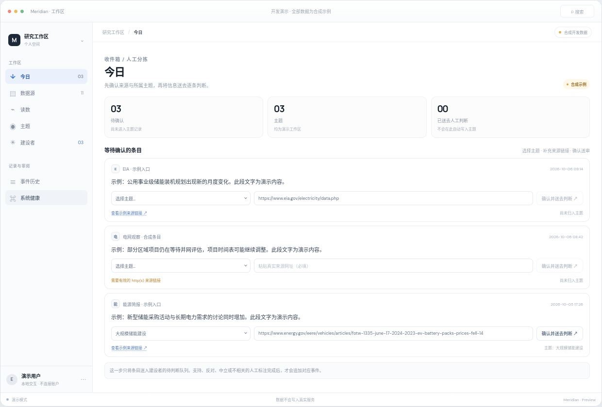

确认来源与主题
新信息先进入收件箱；核对来源并指定主题后，再送入审阅队列。
Meridian 把分散的信息组织成可回看的主题脉络。来源链接、指标读数、人工表态和事件记录在同一个桌面工作流中呈现，帮助你检查材料从何而来、如何被归类；最终判断仍由人作出。

每一步都保留出处与人工确认，让材料更容易被复核，而不是替人给出结论。
新信息先进入收件箱；核对来源并指定主题后，再送入审阅队列。
在主题中对照指标读数与外部数据，查看支持、反对和中立分支。
关联对象后明确标注立场；确认之后，材料才写入主题记录。
追加式事件记录保留变更脉络，便于在应用内追溯较早状态。
查看交互样例、设计提案与桌面应用开发说明。